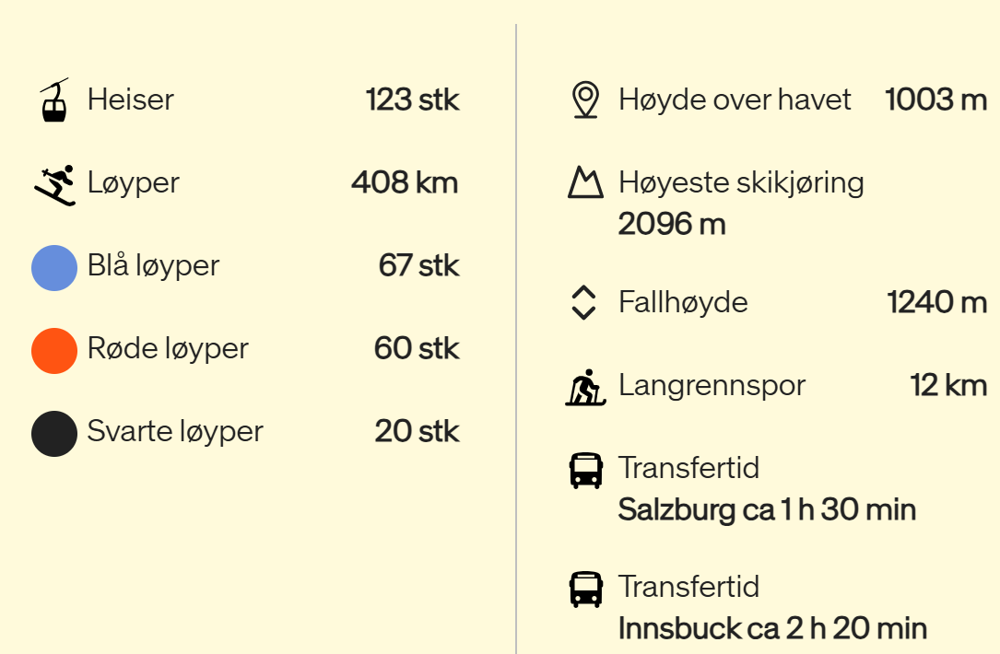

Gasthof Unterwirt er et godt likt og populært familieeid hotell, med absolutt beste beliggenhet i Saalbach. Hotellet er kjent for sitt hyggelige personale og hit vender mange gjester tilbake hver vinter. Det har vært eid og drevet av familien Kröll helt siden 1830, noe som har skapt en egen, familiær følelse. I dag er det Edith og Philip Kröll med familie som gjerne ønsker dere velkommen.
Hotellet ligger rett ved Schattberg Express-heisen og her ligger også skiskolen og skiutleien. Dessuten ligger landsbyens sentrum rett rundt hjørnet, med butikker, restauranter og barer. Trass i nærheten til alt, er det en stille og rolig beliggenhet.
Familien vil beholde hotellets sjarme og klassiske alpestil, samtidig som det utføres kontinuerlig utbedring. Mange av rommene er nyrenoverte og luftige, de fleste har også balkong.
Gasthof Unterwirt har en koselig atmosfære med store, hyggelige fellesområder samt egen bar og restaurant. I den koselige restauranten serveres det en god frokostbuffé hver morgen, med blant annet ferskt brød, lokale skinker, oster og egg.
Et stort pluss etter en lang dag i bakken er at de har en spaavdeling med et lite treningsrom, samt ulike typer badstuer der man kan koble av. Hotellet har også en skistall der man kan oppbevare skiutstyret sitt.
Restaurant Del Rossi er kjent for sin varierte meny som inkluderer biffer, carpaccio, pasta, tradisjonell østerriksk mat som Wiener Schnitzel, samt hamburgere og pizza.
Den ligger i gågaten i Saalbach og har en hyggelig atmosfære med både innendørs og utendørs sitteplasser.
s'Wirtshaus er en populær restaurant som tilbyr en blanding av tradisjonelle østerrikske retter og moderne vegetariske alternativer.
Restauranten har en koselig atmosfære med mye tradisjon og minner. De serverer blant annet biffer, kjøtt- og ostefonduer, samt typiske østerrikske retter. Det finnes også vegetariske, veganske og glutenfrie alternativer.
Et sted for ekte kjennerne – i vår koselige restaurant i hjertet av Saalbach blir du skjemt bort med typiske regionale delikatesser og viltretter fra våre egne jaktmarker.
Nyt en hyggelig middag og la deg bli bortskjemt med retter tilberedt med østerrikske ingredienser. For å komplettere de ulike delikatessene serverer vi utsøkte viner fra Østerrike og de mest berømte vinregionene fra hele verden.
Gold & Pepper, ligger midt i Saalbach,. Med stor entusiasme løfter de ferske, lokale råvarer ved hjelp av middelhavsurter og ingredienser.
De forener utsøkt kvalitet og tolker alpine oppskrifter med middelhavspasjon.
Med dette i tankene finner du klassikere på menyen, inkludert biff-tartar, Charolais indrefilet og wienerschnitzel av kalv, sammen med kamskjell, burrata og persillerisotto.
Hver eneste rett er laget med kjærlighet og tid – og en liten klype lidenskapelig Amore.
Jordnær, kreativ og allsidig – slik smaker kjøkkenet på Hotel Astrid.
Se frem til et variert utvalg av retter, en koselig atmosfære i restauranten Saalbach 626 og stor kulinarisk fleksibilitet – perfekt for hyggelige stunder i hjertet av SalzburgerLand.
s'Wirtshaus er en populær restaurant som tilbyr en blanding av tradisjonelle østerrikske retter og moderne vegetariske alternativer.
Restauranten har en koselig atmosfære med mye tradisjon og minner. De serverer blant annet biffer, kjøtt- og ostefonduer, samt typiske østerrikske retter. Det finnes også vegetariske, veganske og glutenfrie alternativer.
Turmwiese: Ligger i sentrum av Saalbach og er perfekt for nybegynnere. Denne løypen har en jevn gradient og gir en vakker utsikt over Saalbach.
Nybegynnerområdet i Hinterglemm: Dette området har flate løyper som er lett tilgjengelige med trekkheiser. Perfekt for de som tar sine første svinger.
Øvre del av Bernkogel: Denne delen av Bernkogel er veldig flat og gir en flott panoramautsikt. Du kan også variere med løypene rundt G3 Wetterkreuz.
Løyper nær dalen i Leogang: Spesielt den venstre løypen ved L12 Schanteilift er godt egnet for nybegynnere.
Streuböden-området i Fieberbrunn: Dette området tilbyr flate og brede løyper som er ideelle for nybegynnere.
Medium
Schattberg Ost: Løype 2a er en rød løype som byr på en utfordrende og variert nedfart fra toppen av Schattberg til Hinterglemm.
Zwölferkogel: Denne fjelltoppen har flere røde løyper som gir en god blanding av utfordringer og naturskjønn utsikt. Løype 11 er spesielt populær.
Kohlmais: Området rundt Kohlmais tilbyr flere røde løyper som er perfekte for viderekommende. Løype 51 er en favoritt blant mange.
Hochalm: Dette området har brede og godt preparerte røde løyper som gir en flott skikjøringsopplevelse for viderekommende.
Reiterkogel: Løype 32 er en rød løype som gir en fin balanse mellom utfordring og moro, med flotte utsikter over dalen.
Hard
Zwölferkogel Nord: Denne svarte løypen er kjent for sin bratte og ofte isete nedfart, som virkelig setter ferdighetene dine på prøve.
Schattberg Nord: Løype 1 er en utfordrende svart løype som byr på en spennende nedfart med fantastisk utsikt.
Schattberg West: Denne løypen er den lengste i området, med en lengde på 7 km og en høydeforskjell på 1 010 meter. Perfekt for de som søker en lang og krevende nedfart.
Freeride-ruten på Zwölferkogel: For de som liker off-piste, er denne ruten et must. Den byr på variert terreng og spektakulær utsikt over dalen.
Ski-ruten på Schattberg Ost: En spennende nedfart gjennom skogen som gir en adrenalinfylt opplevelse.

Chællenge!
Nytt av året. Utfordringer for alle og enhver.
Slik får du poeng:
📸 Fullført challenge: 5 poeng
🤣 Ekstra morsomt bilde: +3 poeng
🎭 Kreativ vri på utfordringen: +2 poeng
🚫 Ikke fullført challenge: -0 poeng Bilder sendes fortløpende til Miriam i den gule appen
Chællenges
Historie
2005: St. Anton, Østerrike (VM i Oberstdorf)
2006: Serre Chevalier, Frankrike (OL i Torino)
2007: Canazei, Italia
2008: Zermatt, Sveits
2009: Val Thorens, Frankrike
2010: Val d'Isere, Frankrike
2011: Chamonix, Frankrike
2013: Canazei, Italia (VM i Val di Fiemme)
2015: Whistler, Canada (Julie og Fred)
2016: Tignes, Frankrike
2017: Zauchensee, Østerrike
2018: Schladming, Østerrike
2019: St. Anton, Østerrike (VM i Seefeld)
2020: Cervinia, Italia
2023: Bad Gastein, Østerrike
2024: Val Gardena, Italia
2025: Saalbach, Østerrike
×
×
Legg til på hjem-skjerm
Følg disse stegene for å installere appen:
ios_shareTrykk på del-knappen øverst i høyre hjørne.